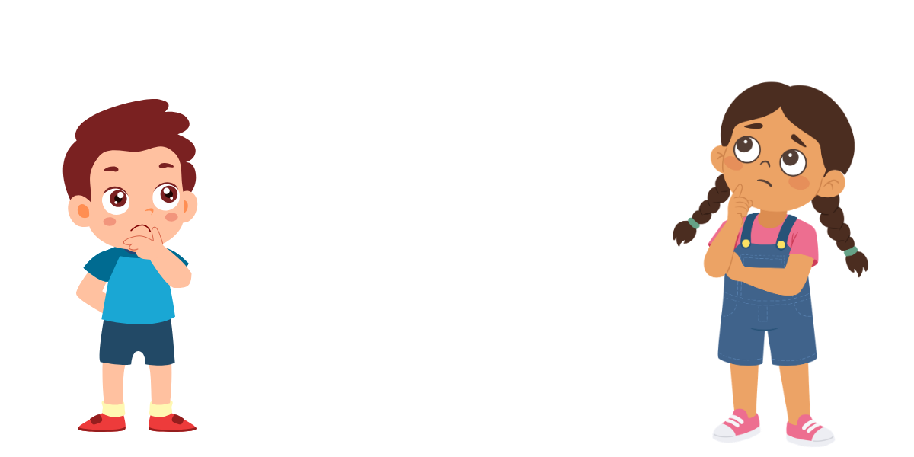
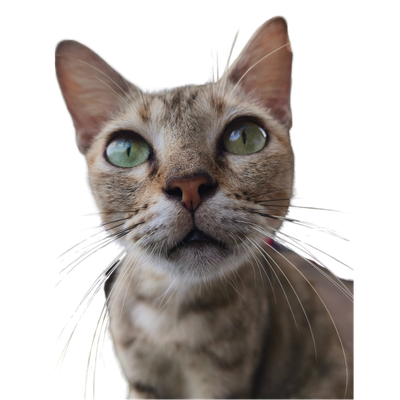
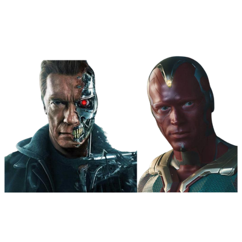
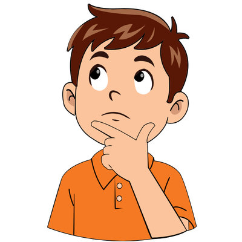

០១
សេចក្តីផ្តើម
តើបញ្ញាសិប្បនិម្មិតគឺជាអ្វី?

តើបញ្ញាសិប្បនិម្មិត ឬAI ជាអ្វី?
តើវាមានខួរក្បាលដូចមនុស្សមែនទេ?
តើវាមានខួរក្បាលដូចមនុស្សមែនទេ?
០២
នៅក្នុងវីដេអូនេះ
តើយើងនឹងស្វែងយល់ពីអ្វីខ្លះក្នុងវីដេអូនេះ?
❓
តើ AI ជាអ្វី?
⚙️
វាធ្វើការរបៀបណា?
⚠️
ការយល់ច្រឡំផ្សេងៗ
🧠
ប្រៀបធៀបរបៀបរៀនរបស់AI និងការរៀនសូត្ររបស់កុមារ
០៣
និយមន័យ
តើ AI ជាអ្វី?
ប្រូក្រាមកុំព្យូទ័រ ដែលអាចធ្វើកិច្ចការទាំងឡាយណាដែលជាទូទៅត្រូវការប្រាជ្ញារបស់មនុស្សដូចជាការរៀនសូត្រ ការដោះស្រាយបញ្ហា ការសម្គាល់រូបភាព/សំឡេង ការយល់ភាសាមនុស្ស
០៤
ប្រៀបធៀប
ប្រៀបធៀបកម្មវិធីធម្មតា vs AI
កម្មវិធីកុំព្យូទ័រសាមញ្ញ
ធ្វើតាមតែច្បាប់ដែលមនុស្សកំណត់
1 + 1 = 2 ✅
តើអ្នកឈ្មោះអ្វី? ❌
ចម្លើយមិនបានកំណត់ទុកជាមុន = គ្មានចម្លើយ
ប្រព័ន្ធ AI
រៀនពីទិន្នន័យ អាចរកចម្លើយដោយខ្លួនឯងបាន
(មើលអេក្រង់បន្ទាប់)
០៥
ប្រៀបធៀប (បន្ត)
ប្រៀបធៀប (បន្ត) កម្មវិធីធម្មតា vs AI
កម្មវិធីកុំព្យូទ័រសាមញ្ញ
ធ្វើតាមតែច្បាប់ដែលមនុស្សសរសេរ
ប្រព័ន្ធ AI
រៀនពីទិន្នន័យ រកចម្លើយដោយខ្លួនឯង
តើអ្នកឈ្មោះអ្វី? ➔ ចម្លើយបត់បែនបាន ✅
ឧទាហរណ៍៖ Gemini ឆ្លើយបានព្រោះវារៀនពីទិន្នន័យអត្ថបទរាប់លាន
០៦
ម៉ាស៊ីនទស្សន៍ទាយ
AI = ម៉ាស៊ីនទស្សន៍ទាយលំនាំ
👀 ក្មេងឃើញឆ្មា ➔ គ្រូប្រាប់ថា "ឆ្មា"
🧩 ខួរក្បាលទាញយក លំនាំ នៃរូបឆ្មា ៖ ត្រចៀកស្រួច · ពុកមាត់ · ស្រែក "ម៉ែវ"
⚡ លើកក្រោយ ពេលឃើញលក្ខណៈនេះ ➔ ក្មេងទស្សន៍ទាយភ្លាមថា "ឆ្មា!"
０៧
AI ធ្វើដូចគ្នា
AI អាចសំគាល់រូបភាពបាន ដោយសារវាបានរៀនពីរូបភាពរាប់លាន

AI វិភាគភិចសែល (Pixels)
🐱 ជារូបឆ្មា
០៨
AI សរសេរអត្ថបទ
ពេលAI សរសេរអត្ថបទ AI មិនបាន "គិត" ទេ ➔ វាទស្សន៍ទាយពាក្យបន្ទាប់
អ្នកវាយបញ្ចូល
សួស្តី 👋
AI ទស្សន៍ទាយពាក្យបន្ទាប់តាមប្រូបាបដើម្បីឆ្លើយតប:
សួស្តី! 96%
ជម្រាបលា 3%
... 1%
ពេលAIត្រូវសរសេរបំពេញល្បះ៖
ខ្ញុំទៅ... ✍️
AI ទស្សន៍ទាយពាក្យបន្ទាប់តាមប្រូបាបដើម្បីបំពេញល្បះឱ្យមានន័យ:
សាលា 99%
សៀវភៅ 0.01%
ប៊ិច 0.01%
០៩
Machine Learning
ការរៀនរបស់ម៉ាស៊ីន៖ ៣ ដំណាក់កាល
១
ការបញ្ចូលទិន្នន័យ (Data Input)
ដូចក្មេងត្រូវការអានសៀវភៅ ដើម្បីរៀន

២
ការហ្វឹកហាត់ (Training)
កុំព្យូទ័រពិនិត្យទិន្នន័យរាប់លានដងដើម្បីរកលំនាំ
៣
ការសាកល្បង និងកែតម្រូវ (Testing & Feedback)
កែកំហុសរហូតដល់ត្រឹមត្រូវ
១០
ប្រភេទ AI
AI មានពីរប្រភេទ
មាននៅលើពិភពលោកសព្វថ្ងៃ
Narrow AI៖ AI កម្រិតចង្អៀត
ធ្វើការងារជំនាញជាក់លាក់មួយប៉ុណ្ណោះ ដូចជា ChatGPT, Gemini៖ សរសេរអត្ថបទ · បង្កើតរូបភាព · បង្កើតវីដេអូ
មិនទាន់មាននៅឡើយទេ
General AI (AGI)៖ AI កម្រិតទូទៅ
សំដៅដល់ AI ដែលចេះគិត និងយល់ដឹងគ្រប់វិស័យ ដូចខួរក្បាលមនុស្ស សព្វថ្ងៃនៅតែជា ទ្រឹស្តី ប៉ុណ្ណោះ

១១
ការយល់ច្រឡំ
ការយល់ច្រឡំ ៤ អំពី AI
✕
AI មានអារម្មណ៍ និងការដឹងខុសត្រូវ
✓
AI គ្មានបេះដូង គ្មានអារម្មណ៍ គ្មានសតិនោះទេ
✕
AI តែងតែនិយាយត្រូវជានិច្ច
✓
AI អាចបង្កើតព័ត៌មានមិនពិត (Hallucination) ត្រូវការមនុស្សត្រួតពិនិត្យជានិច្ច
✕
AI នឹងជំនួសតួនាទីជាគ្រូបង្រៀន
✓
AI មិនអាចជំនួសក្តីស្រឡាញ់ និងការតភ្ជាប់ផ្លូវចិត្តរវាងគ្រូសិស្សបានទេ
✕
ការប្រើ AI គឺដូចការដើរខ្សែលើ
✓
AI ជាឧបករណ៍ដូចទូរស័ព្ទឆ្លាតវៃដែរ សំខាន់នៅត្រង់របៀបនិងពេលវេលាប្រើប្រាស់
១២
ក្រមសីលធម៌
ចំណុច៣ ដែលគ្រូត្រូវប្រុងប្រយ័ត្ន
និងឯកជនភាព
កុំបញ្ចូលឈ្មោះ អាសយដ្ឋាន ឬរូបថតសិស្សពិត ទៅ AI សាធារណៈ

បង្រៀនសិស្សឱ្យចេះចោទសួរលើចម្លើយរបស់ AI ជានិច្ច
ចម្លើយអាចលំអៀង អាស្រ័យលើទិន្នន័យដែលបង្វឹកវា
១៣
សេចក្តីសន្និដ្ឋាន
AI នឹងបន្តជាផ្នែកមួយនៃជីវិតយើង
ការគិតត្រិះរិះ គឺជាគន្លឹះក្នុងការប្រើប្រាស់វា
ស្វែងយល់ពី AI ដើម្បីសន្សំពេលវេលា ហើយផ្តោតលើការបណ្តុះបណ្តាលសិស្សឱ្យប្រើប្រាស់បច្ចេកវិទ្យាដោយការគិតត្រិះរិះ